Explore Bern
A Brief History
Bern was founded in 1191 on a peninsula in the Aare when the Zähringen dukes laid out a planned city that later joined the Swiss Confederacy in 1353. Medieval arcades, the Zytglogge clock tower, and the Federal Palace express how a provincial capital became the seat of Switzerland's federal government in 1848. Bear pits, sandstone façades, and the rose garden above the river record Bern's role linking Alpine passes to the Swiss plateau without heavy industrial growth.
Attractions Map
Top Sights & Activities
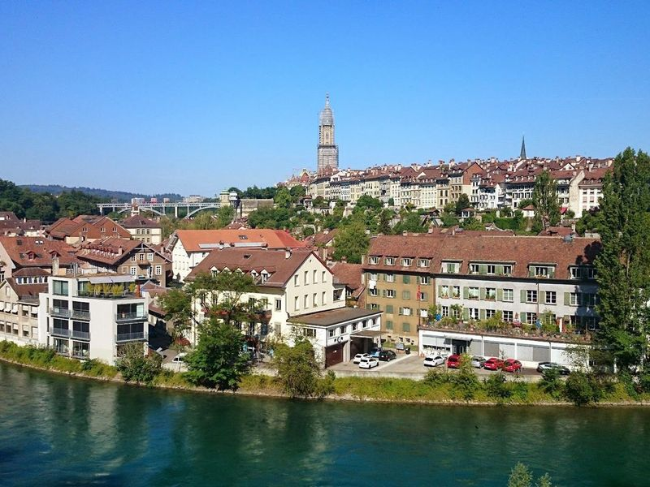
BearPark
BearPark, located in Bern, is a hilly park that houses several brown bears, which are the city's symbol and have been since the 12th century. The park incorporates a 19th-century bear pit where the bears used to roam before being moved to their own spacious park in 2009. travellers can enjoy panoramic views of the old town from the elevated Rose Garden above BearPark and from the platform of the cathedral tower.
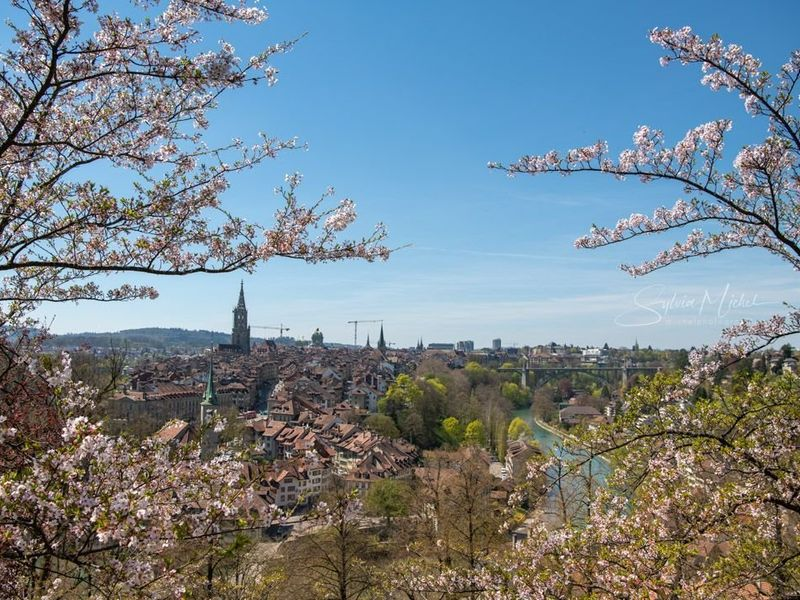
Rosengarten Bern
When visiting the charming country of Switzerland, be sure to include a visit to Rosengarten Bern in your itinerary. This park offers a view of Bern's old town and features an array of beautiful flora including cherry trees, rhododendrons, irises, and hundreds of roses. While the gardens are lovely, the main draw is the panoramic view of the city. A leisurely stroll along the viewpoint allows travellers to take in vistas both day and night.
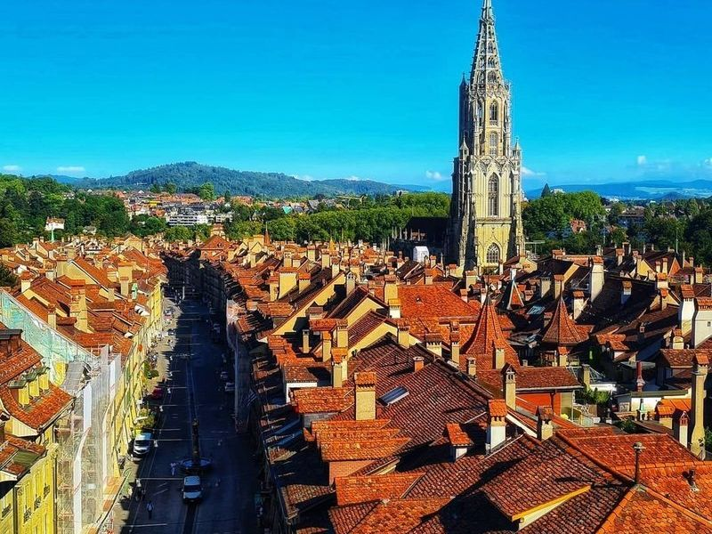
Zytglogge
In the heart of Bern's Old Town, the Zytglogge, or Clock Tower, is a historic landmark dating back to 1405. This 12-meter-high tower features mechanical moving figures that come to life on the hour, including a parade of bears, a jester, a golden rooster, and Chronos, the god of time.
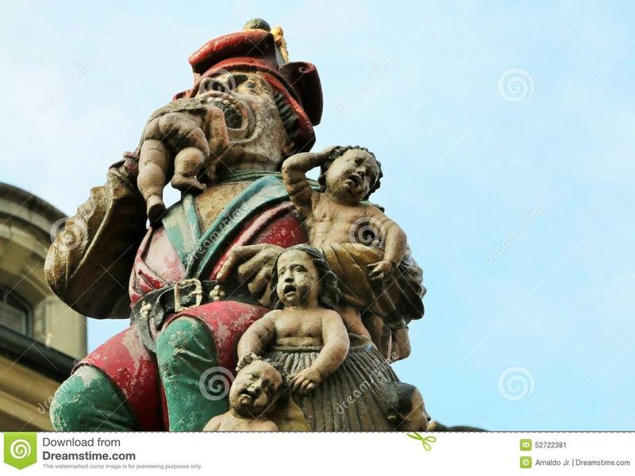
Kindlifresserbrunnen
In the heart of Bern's Old Town, Switzerland, stands the Kindlifresserbrunnen, a historic fountain dating back to 1545. This unique and somewhat eerie sculpture depicts a giant devouring a sack full of children, sparking intrigue and debate among historians and locals about its origins and meaning. Located in Kornhausplatz, this fountain is just one of many whimsical statue water fountains in Bern that travellers can explore while strolling through the medieval town.
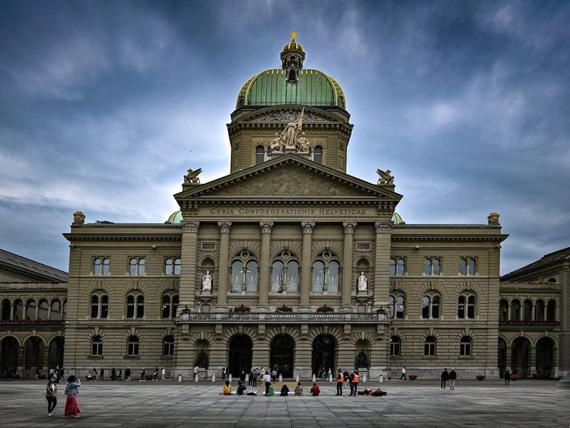
Parliament Building
The Parliament Building, also known as Bundeshaus, is the central hub of Swiss democracy and home to the Swiss Federal Assembly and Federal Council. Built in 1902, this bicameral assembly building features a cupola-topped dome and offers guided tours for travellers. The tours provide an up-close look at Swiss politics, taking you through the domed hall, council chambers, and famous foyer while providing interesting insights into the parliament's history.
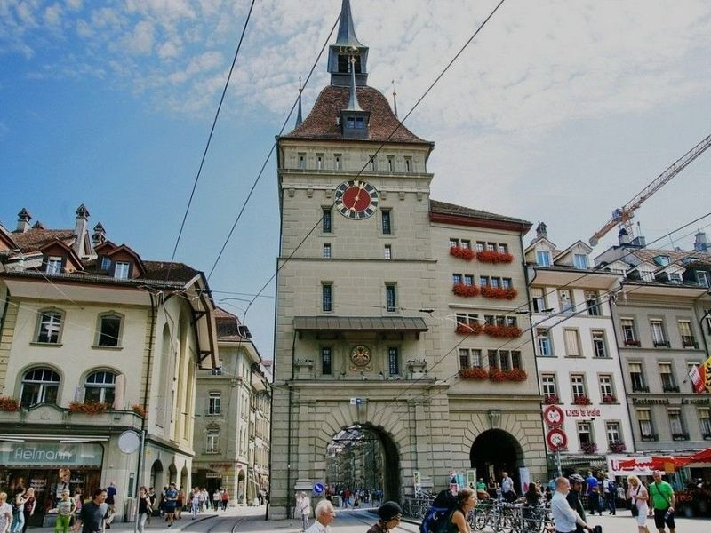
Käfigturm
Located in Bern, the Käfigturm is a 49-meter baroque tower with a clock and bell. It has a rich history dating back to the 13th century and has primarily functioned as a prison. The area around Käfigturm is bustling with activity, including a daily market at Bärenplatz where travellers can enjoy colorful flowers and fresh fruits. The tower is part of UNESCO heritage in Bern and offers an hourly display that adds to its charm.
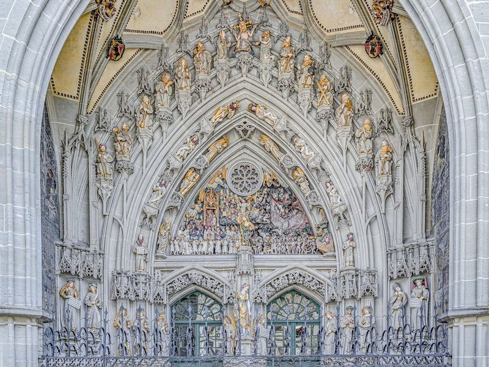
Cathedral of Bern
The Cathedral of Bern, a example of late Gothic architecture, is an In the Old Town. Standing tall at 100 meters, it proudly holds the title of Switzerland's tallest cathedral. Its impressive bell tower features a massive bell that weighs around 10 tons and has a diameter of about 2.5 meters.
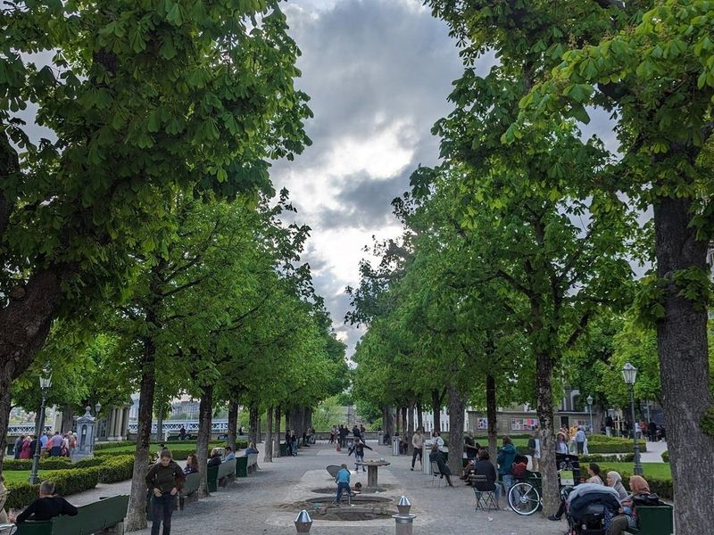
Münsterplattform Bern
The Münster Platform, a great place to relax and have a view of the Alps, is located in Münster. It's also a good spot for taking in some sunlight or dining outdoors. There are benches and tables for lunch, as well as a playground and sand pits for kids. The terrace is busiest during the weekends, but it's worth checking out nonetheless!.
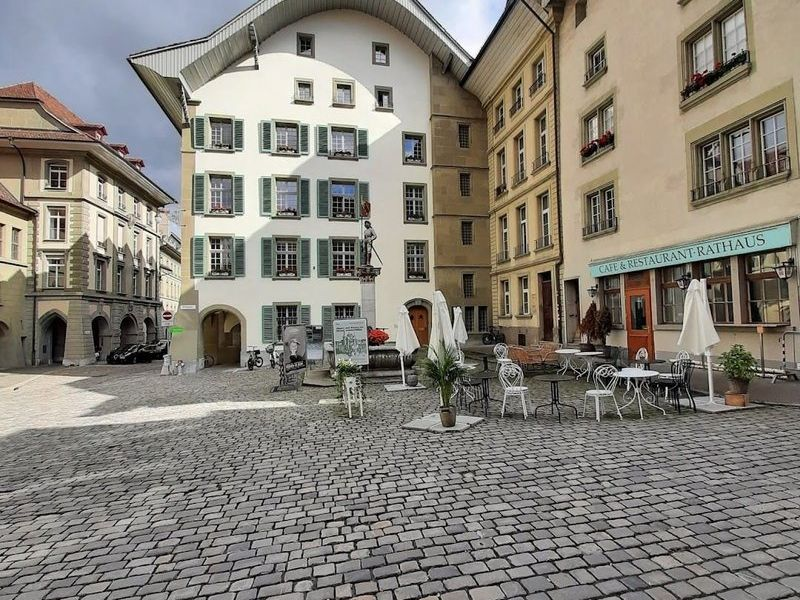
UNESCO - Bern Old Town
Nestled atop a cliff and surrounded by turquoise waters, the UNESCO World Heritage Site of Bern Old Town is a captivating destination that invites exploration. With its enchanting arcaded walkways stretching over six kilometers, travellers can meander through cobbled streets adorned with charming fountains and quirky statues. The medieval center boasts an array of delightful shops, cozy cafes, and vibrant markets where find local produce or unique gifts.
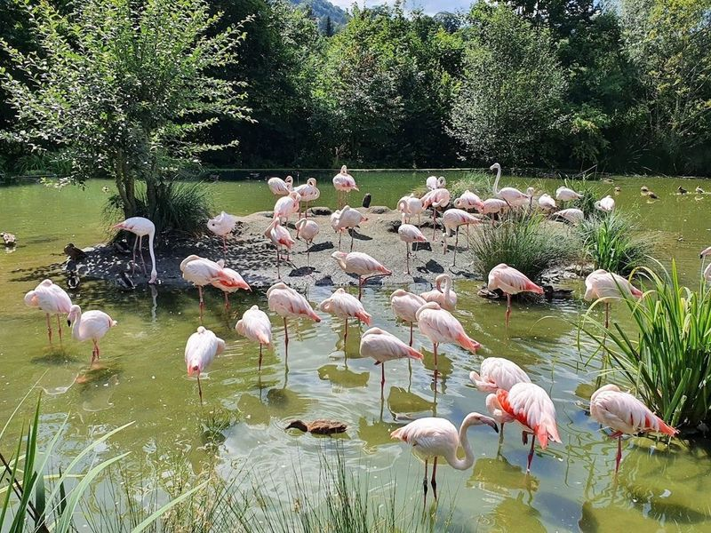
Dählhölzli
Dählhölzli, established in 1937, is a 15-hectare animal park featuring a petting zoo, vivarium, and bear park. The walk to the zoo begins at BearPark and takes you through the historic Matte district to Marzili pool and Schonausteg before reaching Dählhölzli Zoo. Here, travellers can enjoy refreshments at the restaurant while observing over 220 animal species including ibex and wild boars.
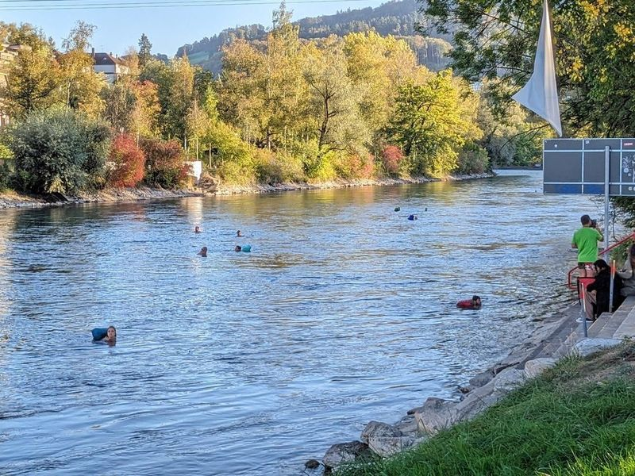
Freibad Marzili
Freibad Marzili, located on the banks of the Aare River in Bern, Switzerland, is a beloved outdoor swimming destination for both locals and tourists. This historic and spacious pool complex offers several pools, grass lawns, and views of the river and nearby mountains. travellers can deposit valuables in lockers before taking a refreshing dip or lounging on the grassy areas.